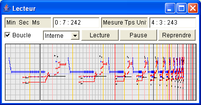

Le séquenceur permet de jouer les expressions Elody. Les commandes habituelles lecture, pause, reprendre et boucle sont disponibles. Un menu permet de choisir entre plusieurs modes de synchronisation :
Lorsqu'une abstraction est placée dans le séquenceur, seulement le « corps » de l'abstraction est joué.